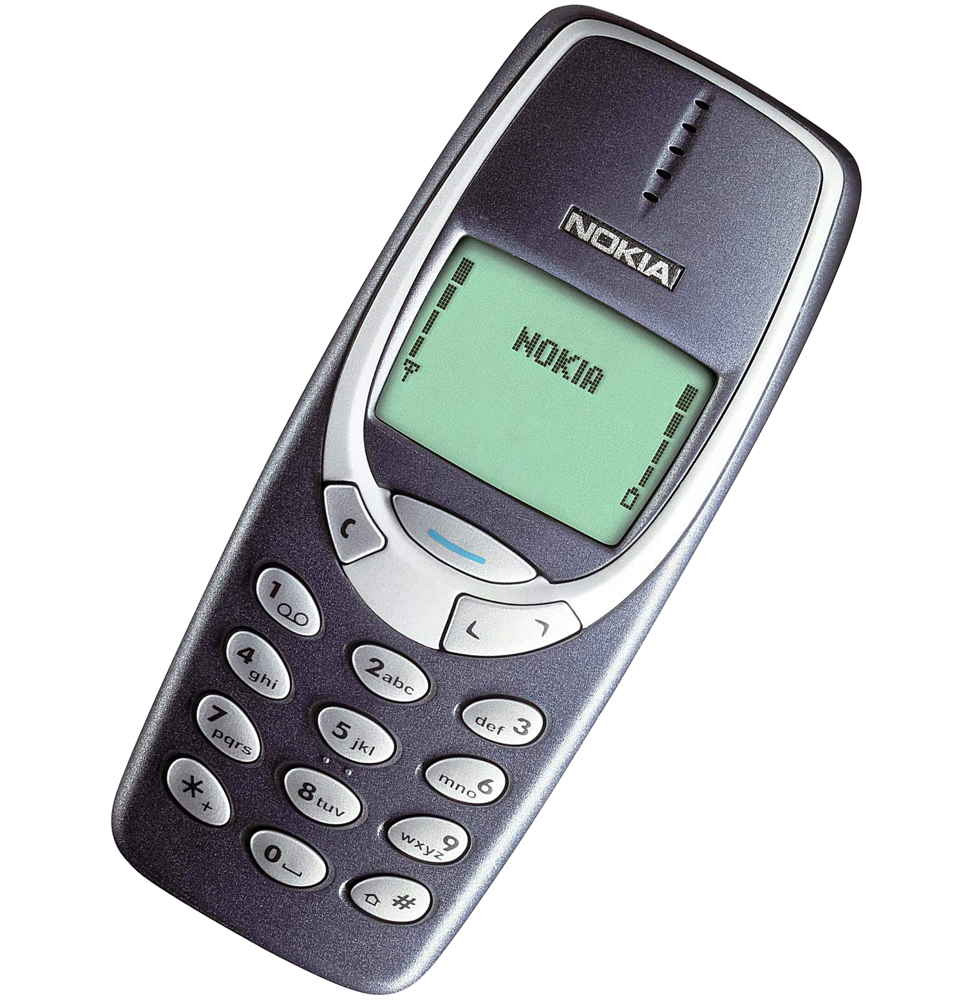

Nokia 3310
History
Nokia 3310 was first released in 2000 and discontinued in 2005.
It remains one of best-selling phones.
Features
Nokia 3310 was first released in 2000 and discontinued in 2005.
It remains one of best-selling phones.
Today
Nokia 3310 was first released in 2000 and discontinued in 2005.
It remains one of best-selling phones.